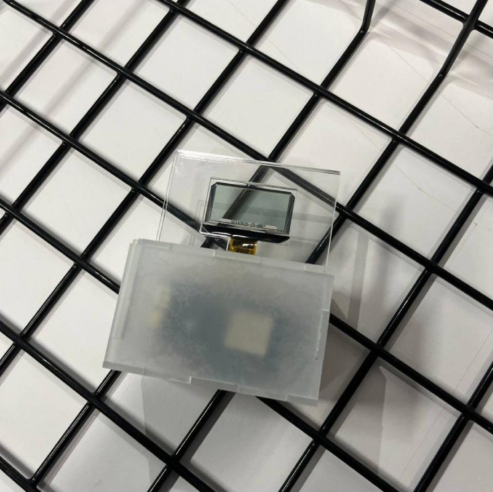
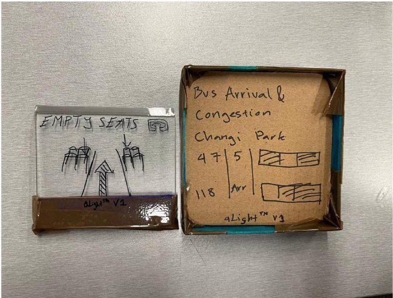
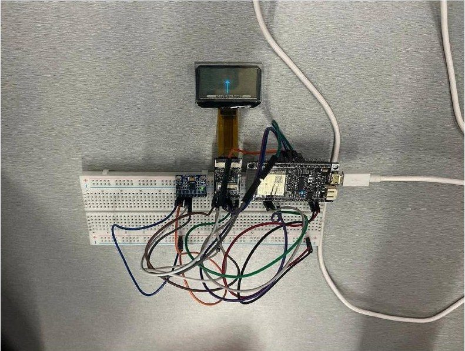
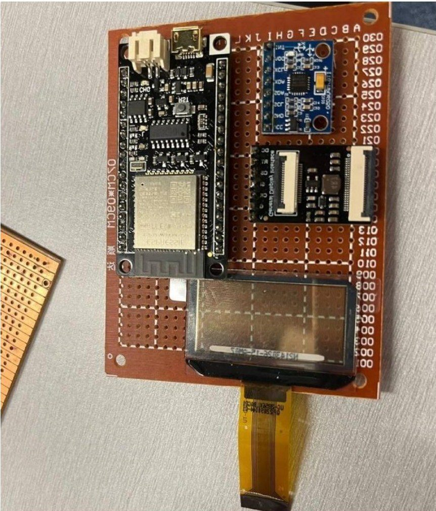
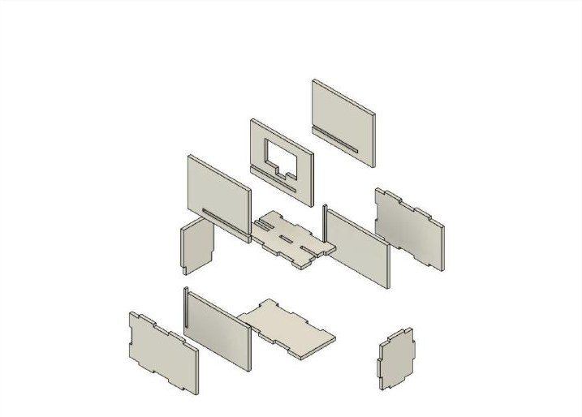
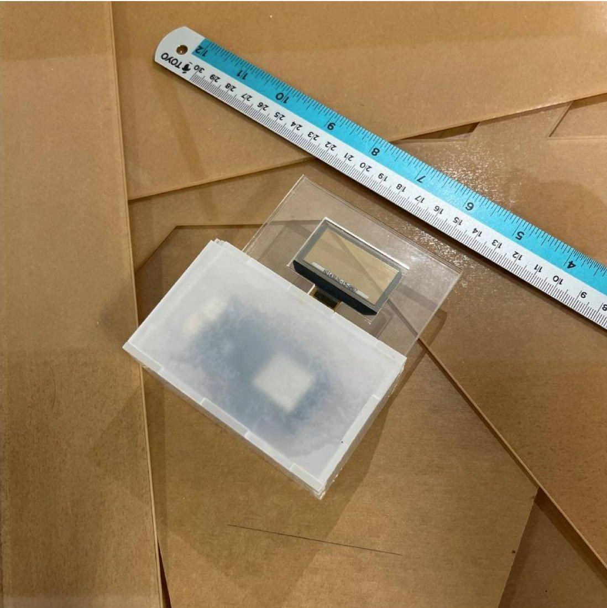
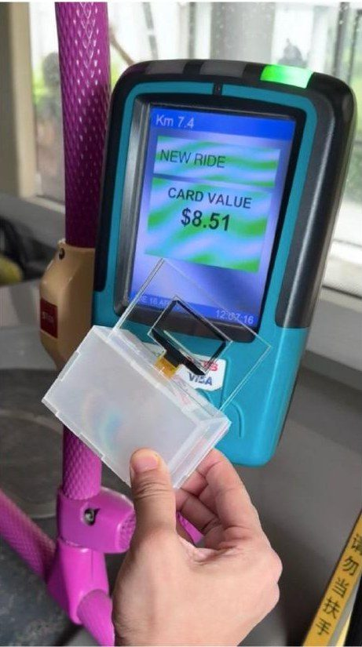
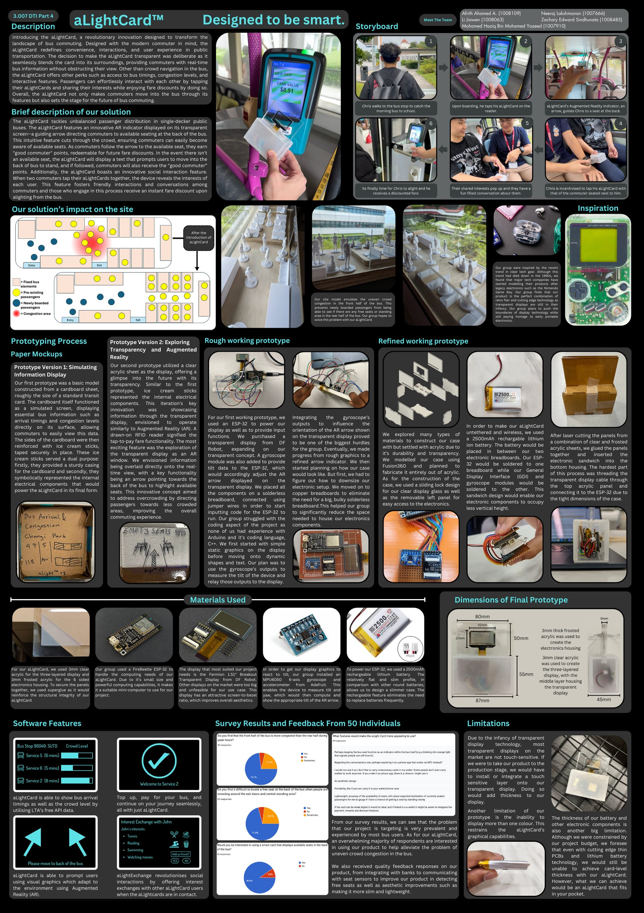
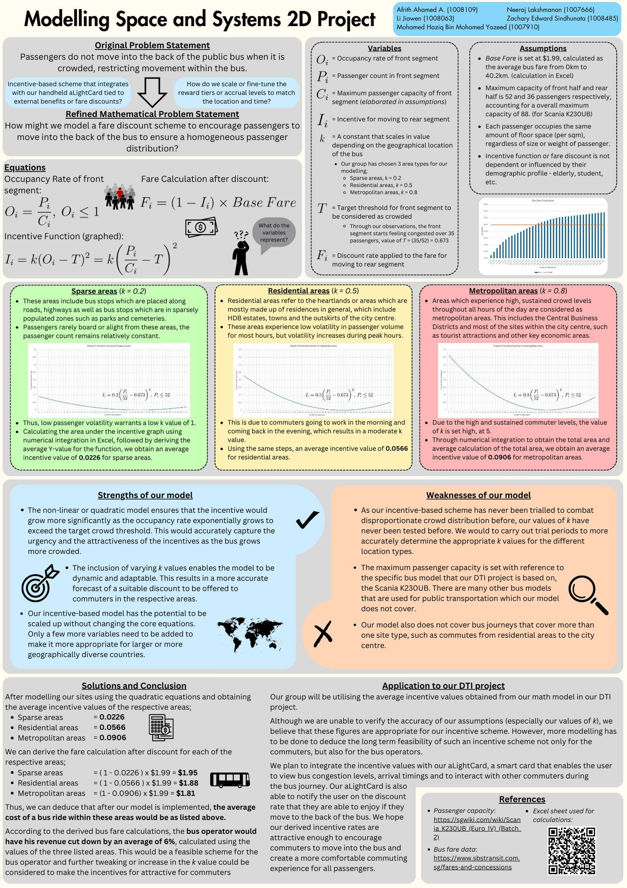
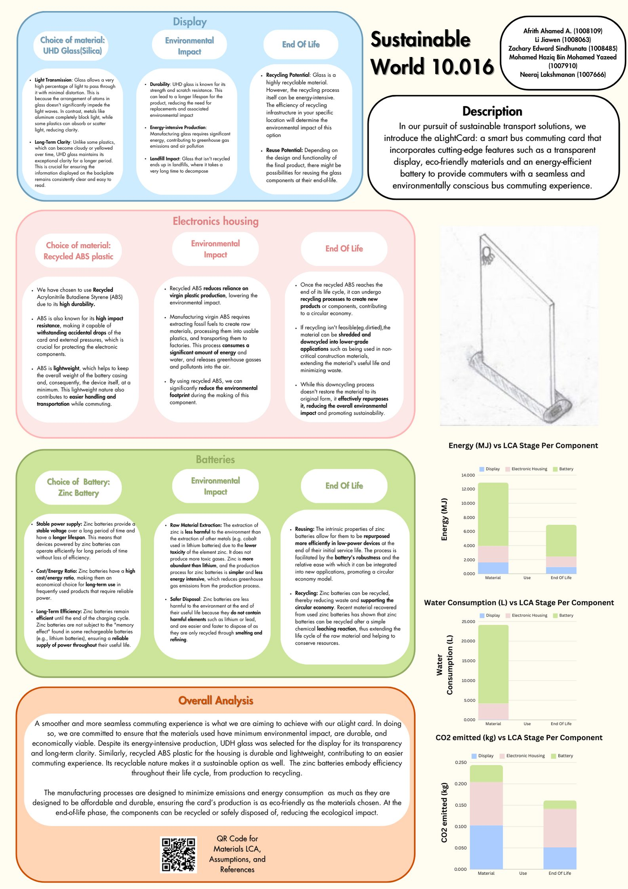

A transit card with a transparent display that points commuters toward empty space at the back of the bus, and rewards them with a cheaper fare for moving there.

aLightCard was our project for Design Thinking and Innovation, SUTD's core design module, where teams take a real-world problem through the whole design thinking process in one term. We followed it end to end:
Two other modules that term, Modelling Space and Systems and Science for a Sustainable World, used the same idea as their project, so we could stress-test it with maths and a sustainability analysis as well (see further down).
On Singapore's single-deck buses, commuters tend to cluster around the front and the exit doors, even when there are free seats at the back. Squeezing down a packed aisle is uncomfortable, and from the front you often can't see whether there's space further in. So people stay put, the front gets more congested, and boarding and alighting slow down for everyone. The operator, SBS Transit, recognises this too.
Our team rode the buses and mapped how passengers actually moved: where they boarded, where they collided and where they bunched up when alighting. We then surveyed 50 commuters to check the problem was real and not just our impression.
aLightCard replaces a normal stored-value card with one that has a small transparent display. Hold it up, and an arrow on the screen points you toward the back of the bus, overlaid on what you see through the glass. Because the display is see-through, it gives an augmented-reality effect without needing a camera. Beyond that, the card:
As Head of Technology, I was responsible for the software that runs on the card. The core challenge was the AR arrow. It had to keep pointing toward the back of the bus however the user held or turned the card, so I wrote C++ firmware for an ESP32 microcontroller that reads a gyroscope and redraws the arrow on the transparent display in real time.
Neither I nor the team had much Arduino or C++ experience going in. I started with simple static graphics on the display, then moved to dynamic drawing, and finally linked the arrow's orientation to the gyroscope. Getting it to feel responsive meant working through sensor drift and calibration issues so the arrow didn't jitter or slowly rotate away from the right direction.
What I learned: a working demo is a long way from a reliable one. Most of my time went into calibration and edge cases, not the first version of the feature. That's the same lesson I later ran into with data pipelines.
The prototype went through three stages. A cardboard-and-acrylic mockup tested the concept with hand-drawn screens. A breadboard version wired up the ESP32, a transparent display from DFRobot and a gyroscope module to prove the electronics. The refined version moved the circuit onto compact copper boards, sandwiched a 2,500 mAh rechargeable battery between them, and housed everything in a case modelled in Fusion 360 and laser-cut from clear and frosted acrylic. The case has a sliding lock for the display glass and a removable side panel for charging.






Alongside the DTI module, the same team carried aLightCard into two other modules that term, which pushed us to test the idea from angles a prototype can't cover.
We modelled the fare discount as a function of how crowded the front of the bus is. Using the capacity of the bus model we studied (a Scania K230UB with 52 places in the front half), we set the crowding threshold at 35 passengers, which is where the front started to feel congested in our observations. Below that, no discount. Above it, the discount grows quadratically, so it becomes more attractive exactly when crowding is worst:
where P is the number of passengers in the front, C is the front capacity and k scales with how busy the area is. Integrating the curve numerically in Excel gave an average discount for each area type:
| Area type | k | Avg. discount | Fare (from $1.99) |
|---|---|---|---|
| Sparse (highways, parks) | 0.2 | 2.3% | $1.95 |
| Residential (HDB estates) | 0.5 | 5.7% | $1.88 |
| Metropolitan (CBD, tourist areas) | 0.8 | 9.1% | $1.81 |
That works out to roughly a 6% average revenue reduction for the operator, which we argued was a feasible starting point. We were also honest about the limits: the k values would need real trials to calibrate, and the model assumes a single bus type and journeys that stay within one area type.
We ran a life-cycle assessment on the card's three main components (the display glass, the electronics housing and the battery). We compared energy use, water consumption and CO₂ emissions across material, use and end-of-life stages, which led us to propose recycled ABS for the housing and to weigh the trade-offs of the battery chemistry and display glass.
Click any poster to open it at full size.

Design Thinking & Innovation: research, prototyping and testing
Modelling Space & Systems: fare incentive model
Science for a Sustainable World: life-cycle assessmentTeam: Afrith Ahamed, Mohamed Haziq Yazeed, Zachary Edward Sindhunata, Neeraj Lakshmanan, Li Jiawen.